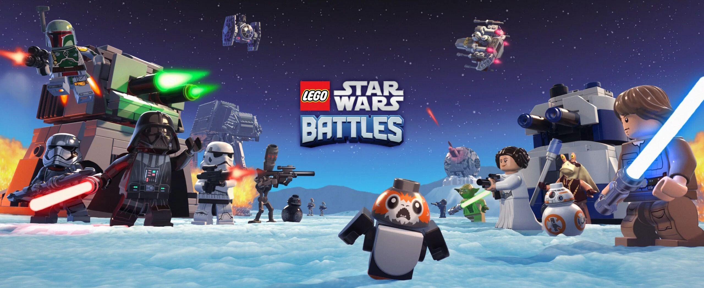
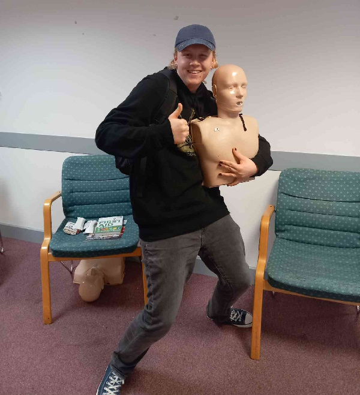
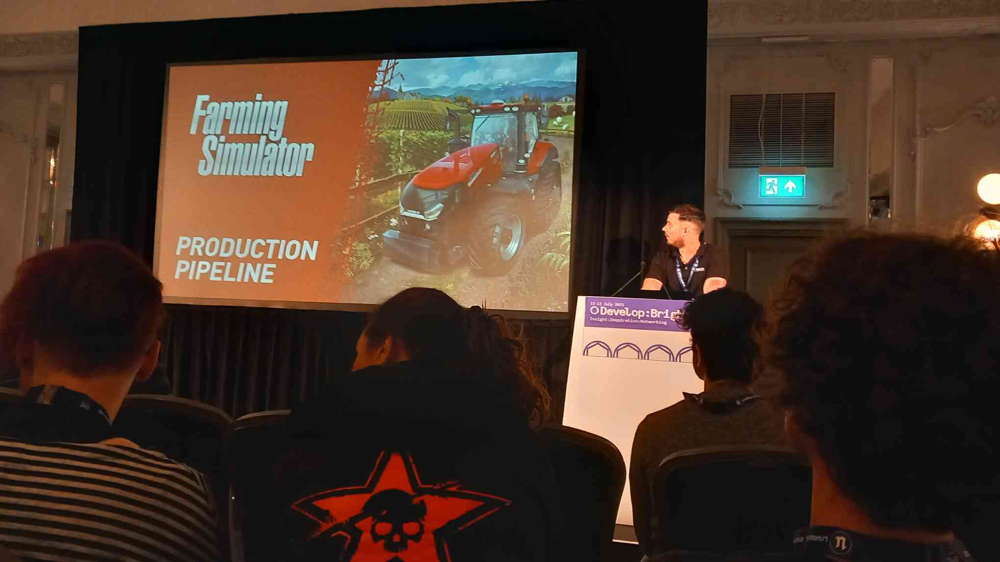
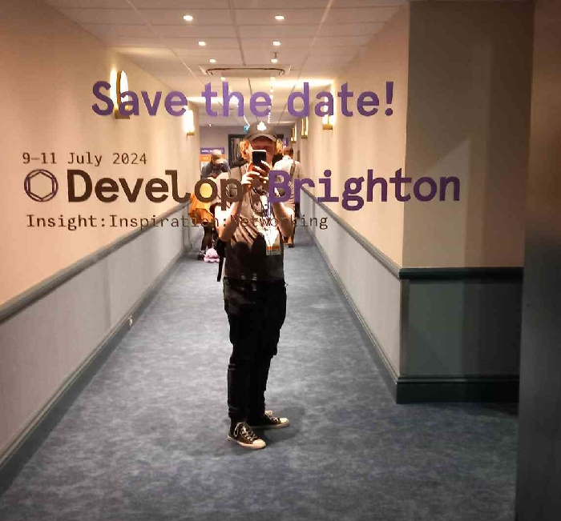

Warner Bros. Games Odyssey
I completed a year long internship at WBG Odyssey, developers of LEGO Star Wars Battles. I spent the first 9 months working with the engineering team, and an additional 3 months working with the design team.
I contributed to LEGO Star Wars Battles, performing engine maintenance and bugfixes, and working closely with QA. It gave me valuable experience with Unity development for iOS and tvOS, including having to learn the ropes of macOS, which I had little experience with when I began. It also gave me great experience with using XCode and Jenkins.
I gave several talks about the Warner Brothers Discovery internship experience to university students alongside team leaders from TT Games and Rocksteady.

I also worked for several months on gameplay and combat prototyping, helping to shape the direction and design of the concept.
During my time at Odyssey I completed a 3 day first aid training course, which gave me widely applicable first aid skills.
I was also lucky enough to get the chance to attend many talks at Develop:Brighton which provided fascinating perspectives on different game industry topics from game companies across the UK.
 For the last 3 months of my time at Odyssey, I worked as a junior designer integrated fully into the design team, which gave me great exposure to the world of game design, which is not something I had had the opportunity to pursue in the industry before.